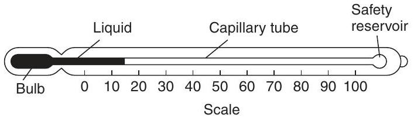
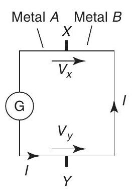
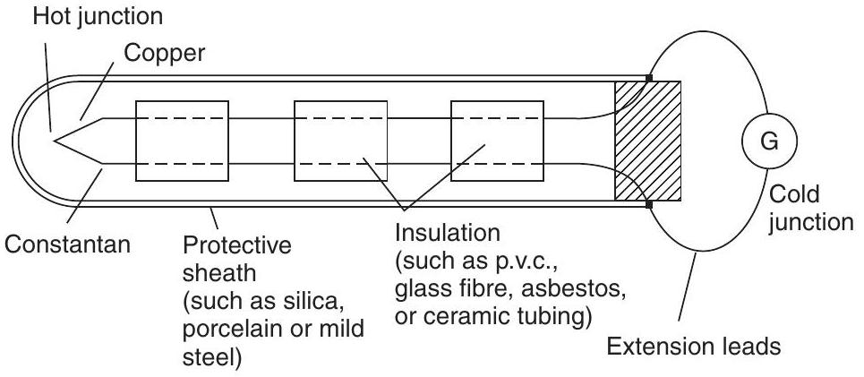
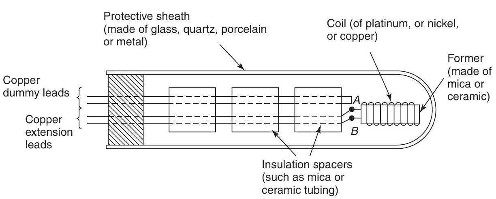
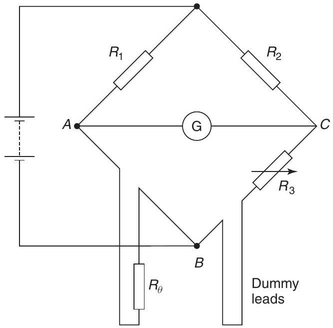
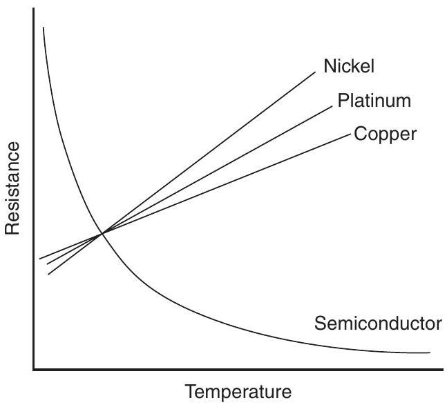
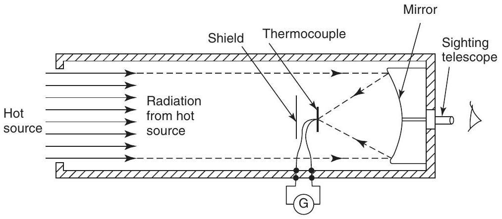
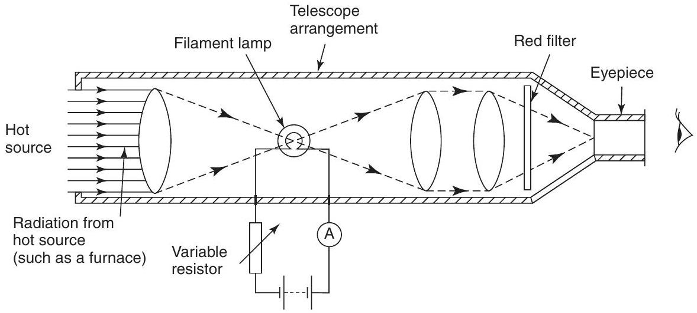

Mechanical science - The measurement of temperature
The measurement of temperature
At the end of this chapter you should be able to:
- describe the construction, principle of operation and practical applications of the following temperature measuring devices:
- (a) liquid-in-glass thermometer (including advantages of mercury, and sources of error)
- (b) thermocouples (including advantages and sources of error)
- (c) resistance thermometer (including limitations and advantages of platinum coil)
- (d) thermistors
- (e) pyrometers (total radiation and optical types, including advantages and disadvantages
- describe the principle of operation of
- (a) temperature indicating paints and crayons
- (b) bimetallic thermometers
- (c) mercury-in-steel thermometer
- (d) gas thermometer
- select the appropriate temperature measuring device for a particular application measured directly, its effects can be measured. Some properties of substances used to determine changes in temperature include changes in dimensions, electrical resistance, state, type and volume of radiation and colour.
Temperature measuring devices available are many and varied. Those described in sections 24.2 to 24.10 are those most often used in science and industry.
24.2 Liquid-in-glass thermometer
A liquid-in-glass thermometer uses the expansion of a liquid with increase in temperature as its principle of operation.
Construction
A typical liquid-in-glass thermometer is shown in Figure 24.1 and consists of a sealed stem of uniform small-bore tubing, called a capillary tube, made of glass, with a cylindrical glass bulb formed at one end. The bulb and part of the stem are filled with a liquid such as mercury or alcohol and the remaining part of the tube is evacuated. A temperature scale is formed by etching graduations on the stem. A safety reservoir is usually provided, into which the liquid can expand without bursting the glass if the temperature is raised beyond the upper limit of the scale.
Figure 24.1
Principle of operation
The operation of a liquid-in-glass thermometer depends on the liquid expanding with increase in temperature and contracting with decrease in temperature. The position of the end of the column of liquid in the tube is a measure of the temperature of the liquid in the bulb - shown as $15^{\circ}\mathrm{C}$ in Figure 24.1, which is about room temperature. Two fixed points are needed to calibrate the thermometer, with the interval between these points being divided into 'degrees'. In the first thermometer, made by Celsius, the fixed points chosen were the temperature of melting ice ($0^{\circ}\mathrm{C}$) and that of boiling water at standard atmospheric pressure ($100^{\circ}\mathrm{C}$), in each case the blank stem being marked at the liquid level. The distance between these two points, called the fundamental interval, was divided into 100 equal parts, each equivalent to $1^{\circ}\mathrm{C}$, thus forming the scale.
The clinical thermometer, with a limited scale around body temperature, the maximum and/or minimum thermometer, recording the maximum day temperature and minimum night temperature, and the Beckman thermometer, which is used only in accurate measurement of temperature change and has no fixed points, are particular types of liquid-in-glass thermometer which all operate on the same principle.
Advantages
The liquid-in-glass thermometer is simple in construction, relatively inexpensive, easy to use and portable, and is the most widely used method of temperature measurement having industrial, chemical , clinical and meteorological applications.
Disadvantages
Liquid-in-glass thermometers tend to be fragile and hence easily broken, can only be used where the liquid column is visible, cannot be used for surface temperature measurements, cannot be read from a distance and are unsuitable for high temperature measurements.
Advantages of mercury
The use of mercury in a thermometer has many advantages, for mercury:
- is clearly visible,
- has a fairly uniform rate of expansion,
- is readily obtainable in the pure state,
- does not 'wet' the glass,
- is a good conductor of heat.
Mercury has a freezing point of $-39^{\circ}\mathrm{C}$ and cannot be used in a thermometer below this temperature. Its boiling point is $357^{\circ}\mathrm{C}$ but before this temperature is reached some distillation of the mercury occurs if the space above the mercury is a vacuum. To prevent this, and to extend the upper temperature limits to over $500^{\circ}\mathrm{C}$, an inert gas such as nitrogen under pressure is used to fill the remainder of the capillary tube. Alcohol, often dyed red to be seen in the capillary tube, is considerably cheaper than mercury and has a freezing point of $-113^{\circ}\mathrm{C}$, which is considerably lower than for mercury. However it has a low boiling point at about $79^{\circ}\mathrm{C}$.
Errors
Typical errors in liquid-in-glass thermometers may occur due to:
(i) the slow cooling rate of glass,
(ii) incorrect positioning of the thermometer,
(iii) a delay in the thermometer becoming steady (i.e. slow response time),
(iv) non-uniformity of the bore of the capillary tube, which means that equal intervals marked on the stem do not correspond to equal temperature intervals.
24.3 Thermocouples
Thermocouples use the e.m.f. set up when the junction of two dissimilar metals is heated.
Principle of operation
At the junction between two different metals, say, copper and constantan, there exists a difference in electrical potential, which varies with the temperature of the junction. This is known as the 'thermoelectric effect'. If the circuit is completed with a second junction at a different temperature, a current will flow round the circuit. This principle is used in the thermocouple. Two different metal conductors having their ends twisted together are shown in Figure 24.2. If the two junctions are at different temperatures, a current I flows round the circuit. The deflection on the galvanometer G depends on the difference in temperature between junctions $X$ and $Y$ and is caused by the difference between voltages $V_{x}$ and $V_{y}$. The higher temperature junction
Figure 24.2
is usually called the 'hot junction' and the lower temperature junction the 'cold junction'. If the cold junction is kept at a constant known temperature, the galvanometer can be calibrated to indicate the temperature of the hot junction directly. The cold junction is then known as the reference junction. In many instrumentation situations, the measuring instrument needs to be located far from the point at which the measurements are to be made. Extension leads are then used, usually made of the same material as the thermocouple but of smaller gauge. The reference junction is then effectively moved to their ends. The thermocouple is used by positioning the hot junction where the temperature is required. The meter will indicate the temperature of the hot junction only if the reference junction is at $0^{\circ}\mathrm{C}$ for:
In a laboratory the reference junction is often placed in melting ice, but in industry it is often positioned in a thermostatically controlled oven or buried underground where the temperature is constant.
Construction
Thermocouple junctions are made by twisting together the ends of two wires of dissimilar metals before welding them. The construction of a typical copper-constantan thermocouple for industrial use is shown in Figure 24.3. Apart from the actual junction the two conductors used must be insulated electrically from each other with appropriate insulation and is shown in Figure 24.3 as twin-holed tubing. The wires and insulation are usually inserted into a sheath for protection from environments in which they might be damaged or corroded.
Figure 24.3
Applications
A copper-constantan thermocouple can measure temperature from $-250^{\circ}\mathrm{C}$ up to about $400^{\circ}\mathrm{C}$, and is used typically with boiler flue gases, food processing and with sub-zero temperature measurement. An iron-constantan thermocouple can measure temperature from $-200^{\circ}\mathrm{C}$ to about $850^{\circ}\mathrm{C}$, and is used typically in paper and pulp mills, re-heat and annealing furnaces and in chemical reactors. A chromel-alumel thermocouple can measure temperatures from $-200^{\circ}\mathrm{C}$ to about $1100^{\circ}\mathrm{C}$ and is used typically with blast furnace gases, brick kilns and in glass manufacture.
For the measurement of temperatures above $1100^{\circ}\mathrm{C}$ radiation pyrometers are normally used. However, thermocouples are available made of platinumplatinum/rhodium, capable of measuring temperatures up to $1400^{\circ}\mathrm{C}$, or tungsten-molybdenum which can measure up to $2600^{\circ}\mathrm{C}$.
Advantages
A thermocouple:
(i) has a very simple, relatively inexpensive construction,
(ii) can be made very small and compact,
(iii) is robust,
(iv) is easily replaced if damaged,
(v) has a small response time,
(vi) can be used at a distance from the actual measuring instrument and is thus ideal for use with automatic and remote-control systems.
Sources of error
Sources of error in the thermocouple, which are difficult to overcome, include:
(i) voltage drops in leads and junctions,
(ii) possible variations in the temperature of the cold junction,
(iii) stray thermoelectric effects, which are caused by the addition of further metals into the'ideal' two-metal thermocouple circuit.
Additional leads are frequently necessary for extension leads or voltmeter terminal connections.
A thermocouple may be used with a battery- or mains-operated electronic thermometer instead of a millivoltmeter. These devices amplify the small e.m.f.'s from the thermocouple before feeding them to a multi-range voltmeter calibrated directly with temperature scales. These devices have great accuracy and are almost unaffected by voltage drops in the leads and junctions.
Problem 1. A chromel-alumel thermocouple generates an e.m.f. of 5 mV . Determine the temperature of the hot junction if the cold junction is at a temperature of $15^{\circ}\mathrm{C}$ and the sensitivity of the thermocouple is $0.04\mathrm{~mV}/^{\circ}\mathrm{C}$.
Temperature difference for 5 mV $$ =\frac{5\mathrm{~mV}}{0.04\mathrm{~mV}/^{\circ}\mathrm{C}}=125{ }^{\circ}\mathrm{C} $$
Temperature at hot junction
Now try the following exercise
Exercise 127 Further problem on the thermocouple
- A platinum-platinum/rhodium thermocouple generates an e.m.f. of 7.5 mV . If the cold junction is at a temperature of $20^{\circ}\mathrm{C}$, determine the temperature of the hot junction. Assume the sensitivity of the thermocouple to be $6\mathrm{~\mu V}/^{\circ}\mathrm{C}$ [$1270^{\circ}\mathrm{C}$]
24.4 Resistance thermometers
Resistance thermometers use the change in electrical resistance caused by temperature change.
Construction
Resistance thermometers are made in a variety of sizes, shapes and forms depending on the application for which they are designed. A typical resistance thermometer is shown diagrammatically in Figure 24.4. The most common metal used for the coil in such thermometers is platinum even though its sensitivity is not as high as other metals such as copper and nickel. However, platinum is a very stable metal and provides reproducible results in a resistance thermometer. A platinum resistance thermometer is often used as a calibrating device. Since platinum is expensive, connecting leads of another metal, usually copper, are used with the thermometer to connect it to a measuring circuit. The platinum and the connecting leads are shown joined at $A$ and $B$ in Figure 24.4, although sometimes this junction may be made outside of the sheath. However, these leads often come into close contact with the heat source which can introduce errors into the measurements. These may be eliminated by including a pair of identical leads, called dummy leads, which experience the same temperature change as the extension leads.
Figure 24.4
Principle of operation
With most metals a rise in temperature causes an increase in electrical resistance, and since resistance can be measured accurately this property can be used to measure temperature. If the resistance of a length of wire at $0{ }^{\circ}\mathrm{C}$ is $R_{0}$, and its resistance at $\theta^{\circ}\mathrm{C}$ is $R_{\theta}$, then $R_{\theta}=R_{0}(1+\alpha \theta)$, where $\alpha$ is the temperature coefficient of resistance of the material (see Chapter 20).
Rearranging gives:
Values of $R_{0}$ and $\alpha$ may be determined experimentally or obtained from existing data. Thus, if $R_{\theta}$ can be measured, temperature $\theta$ can be calculated. This is the principle of operation of a resistance thermometer. Although a sensitive ohmmeter can be used to measure $R_{\theta}$, for more accurate determinations a Wheatstone bridge circuit is used as shown in Figure 24.5. This circuit compares an unknown resistance $R_{\theta}$ with others of known values, $R_{1}$ and $R_{2}$ being fixed values and $R_{3}$ being variable. Galvanometer G is a sensitive centre-zero microammeter. $R_{3}$ is varied until zero deflection is obtained on the galvanometer, i.e. no current flows through G and the bridge is said to be 'balanced'. At balance: $$ R_{2}R_{\theta}=R_{1}R_{3} $$ from which, $$ R_{\theta}=\frac{R_{1}R_{3}}{R_{2}} $$ and if $R_{1}$ and $R_{2}$ are of equal value, then $R_{\theta}=R_{3}$ A resistance thermometer may be connected between points $A$ and $B$ in Figure 24.5 and its resistance $R_{\theta}$ at any temperature $\theta$ accurately measured. Dummy leads included in arm $BC$ help to eliminate errors caused by the extension leads which are normally necessary in such a thermometer.
Figure 24.5
Limitations
Resistance thermometers using a nickel coil are used mainly in the range $-100^{\circ}\mathrm{C}$ to $300^{\circ}\mathrm{C}$, whereas platinum resistance thermometers are capable of measuring with greater accuracy temperatures in the range $-200^{\circ}\mathrm{C}$ to about $800^{\circ}\mathrm{C}$. This upper range may be extended to about $1500^{\circ}\mathrm{C}$ if high melting point materials are used for the sheath and coil construction.
Advantages and disadvantages of a platinum coil
Platinum is commonly used in resistance thermometers since it is chemically inert, i.e. un-reactive, resists corrosion and oxidation and has a high melting point of $1769^{\circ}\mathrm{C}$. A disadvantage of platinum is its slow response to temperature variation.
Applications
Platinum resistance thermometers may be used as calibrating devices or in applications such as heattreating and annealing processes and can be adapted easily for use with automatic recording or control systems. Resistance thermometers tend to be fragile and easily damaged especially when subjected to excessive vibration or shock.
Problem 2. A platinum resistance thermometer has a resistance of $25\mathrm{~\Omega}$ at $0{ }^{\circ}\mathrm{C}$. When measuring the temperature of an annealing process a resistance value of $60\mathrm{~\Omega}$ is recorded. To what temperature does this correspond? Take the temperature coefficient of resistance of platinum as $0.0038/^{\circ}\mathrm{C}$
$R_{\theta}=R_{0}(1+\alpha \theta)$, where $R_{0}=25\mathrm{~\Omega}, R_{\theta}=60\mathrm{~\Omega}$ and $\alpha=0.0038/^{\circ}\mathrm{C}$. Rearranging gives: $$ \text {temperature}, \begin{aligned} \theta &=\frac{R_{\theta}-R_{0}}{\alpha R_{0}} \\ &=\frac{60-25}{(0.0038)(25)}=\mathbf{368.4}{ }^{\circ}\mathbf{C}\end{aligned} $$
Now try the following exercise
Exercise 128 Further problem on the resistance thermometer
- A platinum resistance thermometer has a resistance of $100\mathrm{~\Omega}$ at $0{ }^{\circ}\mathrm{C}$. When measuring the temperature of a heat process a resistance value of $177\mathrm{~\Omega}$ is measured using a Wheatstone bridge. Given that the temperature coefficient of resistance of platinum is $0.0038/^{\circ}\mathrm{C}$, determine the temperature of the heat process, correct to the nearest degree. [$203{ }^{\circ}\mathrm{C}$]
24.5 Thermistors
A thermistor is a semi-conducting material - such as mixtures of oxides of copper, manganese, cobalt, etc. - in the form of a fused bead connected to two leads. As its temperature is increased its resistance rapidly decreases. Typical resistance/temperature curves for a thermistor and common metals are shown in Figure 24.6. The resistance of a typical
Figure 24.6
thermistor can vary from $400\mathrm{~\Omega}$ at $0^{\circ}\mathrm{C}$ to $100\mathrm{~\Omega}$ at $140^{\circ}\mathrm{C}$.
Advantages
The main advantages of a thermistor are its high sensitivity and small size. It provides an inexpensive method of measuring and detecting small changes in temperature.
24.6 Pyrometers
A pyrometer is a device for measuring very high temperatures and uses the principle that all substances emit radiant energy when hot, the rate of emission depending on their temperature. The measurement of thermal radiation is therefore a convenient method of determining the temperature of hot sources and is particularly useful in industrial processes. There are two main types of pyrometer, namely the total radiation pyrometer and the optical pyrometer. Pyrometers are very convenient instruments since they can be used at a safe and comfortable distance from the hot source. Thus applications of pyrometers are found in measuring the temperature of molten metals, the interiors of furnaces or the interiors of volcanoes. Total radiation pyrometers can also be used in conjunction with devices which record and control temperature continuously.
Total radiation pyrometer
A typical arrangement of a total radiation pyrometer is shown in Figure 24.7. Radiant energy from a
Figure 24.7
hot source, such as a furnace, is focused on to the hot junction of a thermocouple after reflection from a concave mirror. The temperature rise recorded by the thermocouple depends on the amount of radiant energy received, which in turn depends on the temperature of the hot source. The galvanometer G shown connected to the thermocouple records the current which results from the e.m.f. developed and may be calibrated to give a direct reading of the temperature of the hot source. The thermocouple is protected from direct radiation by a shield as shown and the hot source may be viewed through the sighting telescope. For greater sensitivity, a thermopile may be used, a thermopile being a number of thermocouples connected in series. Total radiation pyrometers are used to measure temperature in the range $700^{\circ}\mathrm{C}$ to $2000^{\circ}\mathrm{C}$.
Optical pyrometers
When the temperature of an object is raised sufficiently two visual effects occur; the object appears brighter and there is a change in colour of the light emitted. These effects are used in the optical pyrometer where a comparison or matching is made between the brightness of the glowing hot source and the light from a filament of known temperature. The most frequently used optical pyrometer is the disappearing filament pyrometer and a typical arrangement is shown in Figure 24.8. A filament lamp is built into a telescope arrangement which receives radiation from a hot source, an image of which is seen through an eyepiece. A red filter is incorporated as a protection to the eye. The current flowing through the lamp is controlled by a variable resistor. As the current is increased the temperature of the filament increases and its colour changes. When viewed through the eyepiece the filament of the lamp appears superimposed on the image of the radiant energy from the hot source. The current is varied until the filament glows as brightly as the background. It will then merge into the background and seem to disappear. The current required to achieve this is a measure of the temperature of
Figure 24.8
the hot source and the ammeter can be calibrated to read the temperature directly. Optical pyrometers may be used to measure temperatures up to, and even in excess of, $3000^{\circ}\mathrm{C}$.
Advantages of pyrometers
(i) There is no practical limit to the temperature that a pyrometer can measure.
(ii) A pyrometer need not be brought directly into the hot zone and so is free from the effects of heat and chemical attack that can often cause other measuring devices to deteriorate in use.
(iii) Very fast rates of change of temperature can be followed by a pyrometer.
(iv) The temperature of moving bodies can be measured.
(v) The lens system makes the pyrometer virtually independent of its distance from the source.
Disadvantages of pyrometers
(i) A pyrometer is often more expensive than other temperature measuring devices.
(ii) A direct view of the heat process is necessary.
(iii) Manual adjustment is necessary.
(iv) A reasonable amount of skill and care is required in calibrating and using a pyrometer. For each new measuring situation the pyrometer must be re-calibrated.
(v) The temperature of the surroundings may affect the reading of the pyrometer and such errors are difficult to eliminate.
24.7 Temperature indicating paints and crayons
Temperature indicating paints contain substances which change their colour when heated to certain temperatures. This change is usually due to chemical decomposition, such as loss of water, in which the change in colour of the paint after having reached the particular temperature will be a permanent one. However, in some types the original colour returns after cooling. Temperature indicating paints are used where the temperature of inaccessible parts of apparatus and machines is required. They are particularly useful in heat-treatment processes where the temperature of the component needs to be known before a quenching operation. There are several such paints available and most have only a small temperature range so that different paints have to be used for different temperatures. The usual range of temperatures covered by these paints is from about $30^{\circ}\mathrm{C}$ to $700^{\circ}\mathrm{C}$.
Temperature sensitive crayons consist of fusible solids compressed into the form of a stick. The melting point of such crayons is used to determine when a given temperature has been reached. The crayons are simple to use but indicate a single temperature only, i.e. its melting point temperature. There are over 100 different crayons available, each covering a particular range of temperature. Crayons are available for temperatures within the range of $50^{\circ}\mathrm{C}$ to $1400^{\circ}\mathrm{C}$. Such crayons are used in metallurgical applications such as preheating before welding, hardening, annealing or tempering, or in monitoring the temperature of critical parts of machines or for checking mould temperatures in the rubber and plastics industries.
24.8 Bimetallic thermometers
Bimetallic thermometers depend on the expansion of metal strips which operate an indicating pointer. Two thin metal strips of differing thermal expansion are welded or riveted together and the curvature of the bimetallic strip changes with temperature change. For greater sensitivity the strips may be coiled into a flat spiral or helix, one end being fixed and the other being made to rotate a pointer over a scale. Bimetallic thermometers are useful for alarm and over-temperature applications where extreme accuracy is not essential. If the whole is placed in a sheath, protection from corrosive environments is achieved but with a reduction in response characteristics. The normal upper limit of temperature measurement by this thermometer is about $200^{\circ}\mathrm{C}$, although with special metals the range can be extended to about $400^{\circ}\mathrm{C}$.
24.9 Mercury-in-steel thermometer
The mercury-in-steel thermometer is an extension of the principle of the mercury-in-glass thermometer. Mercury in a steel bulb expands via a small bore capillary tube into a pressure indicating device, say a Bourdon gauge, the position of the pointer indicating the amount of expansion and thus the temperature. The advantages of this instrument are that it is robust and, by increasing the length of the capillary tube, the gauge can be placed some distance from the bulb and can thus be used to monitor temperatures in positions which are inaccessible to the liquid-inglass thermometer. Such thermometers may be used to measure temperatures up to $600^{\circ}\mathrm{C}$.
24.10 Gas thermometers
The gas thermometer consists of a flexible U-tube of mercury connected by a capillary tube to a vessel containing gas. The change in the volume of a fixed mass of gas at constant pressure, or the change in pressure of a fixed mass of gas at constant volume, may be used to measure temperature. This thermometer is cumbersome and rarely used to measure temperature directly, but it is often used as a standard with which to calibrate other types of thermometer. With pure hydrogen the range of the instrument extends from $-240^{\circ}\mathrm{C}$ to $1500^{\circ}\mathrm{C}$ and measurements can be made with extreme accuracy.
24.11 Choice of measuring device
Problem 3. State which device would be most suitable to measure the following: (a) metal in a furnace, in the range $50^{\circ}\mathrm{C}$ to $1600^{\circ}\mathrm{C}$ (b) the air in an office in the range $0^{\circ}\mathrm{C}$ to $40^{\circ}\mathrm{C}$ (c) boiler flue gas in the range $15^{\circ}\mathrm{C}$ to $300^{\circ}\mathrm{C}$ (d) a metal surface, where a visual indication is required when it reaches $425^{\circ}\mathrm{C}$ (e) materials in a high-temperature furnace in the range $2000^{\circ}\mathrm{C}$ to $2800^{\circ}\mathrm{C}$ (f) to calibrate a thermocouple in the range $-100^{\circ}\mathrm{C}$ to $500^{\circ}\mathrm{C}$ (g) brick in a kiln up to $900^{\circ}\mathrm{C}$ (h) an inexpensive method for food processing applications in the range $-25^{\circ}\mathrm{C}$ to $-75^{\circ}\mathrm{C}$
(a) Radiation pyrometer
(b) Mercury-in-glass thermometer
(c) Copper-constantan thermocouple
(d) Temperature sensitive crayon
(e) Optical pyrometer
(f) Platinum resistance thermometer or gas thermometer
(g) Chromel-alumel thermocouple
(h) Alcohol-in-glass thermometer
Now try the following exercise
Exercise 129 Short answer questions on the measurement of temperature
For each of the temperature measuring devices listed in 1 to 10, state very briefly its principle of operation and the range of temperatures that it is capable of measuring.
- Mercury-in-glass thermometer
- Alcohol-in-glass thermometer
- Thermocouple
- Platinum resistance thermometer
- Total radiation pyrometer
- Optical pyrometer
- Temperature sensitive crayons
- Bimetallic thermometer
- Mercury-in-steel thermometer
- Gas thermometer
Now try the following exercise
Exercise 130 Multi-choice questions on the measurement of temperature (Answers on page 285)
- The most suitable device for measuring very small temperature changes is a (a) thermopile (b) thermocouple (c) thermistor
- When two wires of different metals are twisted together and heat applied to the junction, an e.m.f. is produced. This effect is used in a thermocouple to measure: (a) e.m.f. (b) temperature (c) expansion (d) heat
- A cold junction of a thermocouple is at room temperature of $15^{\circ}\mathrm{C}$. A voltmeter connected to the thermocouple circuit indicates 10 mV . If the voltmeter is calibrated as $20^{\circ}\mathrm{C}/ \mathrm{mV}$, the temperature of the hot source is: (a) $185^{\circ}\mathrm{C}$ (b) $200^{\circ}\mathrm{C}$ (c) $35^{\circ}\mathrm{C}$ (d) $215^{\circ}\mathrm{C}$
- The e.m.f. generated by a copperconstantan thermometer is 15 mV . If the cold junction is at a temperature of $20^{\circ}\mathrm{C}$, the temperature of the hot junction when the sensitivity of the thermocouple is $0.03\mathrm{~mV}/^{\circ}\mathrm{C}$ is: (a) $480^{\circ}\mathrm{C}$ (b) $520^{\circ}\mathrm{C}$ (c) $20.45^{\circ}\mathrm{C}$ (d) $500^{\circ}\mathrm{C}$
In questions 5 to 12, select the most appropriate temperature measuring device from this list. (a) copper-constantan thermocouple (b) thermistor (c) mercury-in-glass thermometer (d) total radiation pyrometer (e) platinum resistance thermometer (f) gas thermometer (g) temperature sensitive crayon (h) alcohol-in-glass thermometer (i) bimetallic thermometer (j) mercury-in-steel thermometer (k) optical pyrometer
- Over-temperature alarm at about $180^{\circ}\mathrm{C}$
- Food processing plant in the range $-250^{\circ}\mathrm{C}$ to $+250^{\circ}\mathrm{C}$
- Automatic recording system for a heat treating process in the range $90^{\circ}\mathrm{C}$ to $250^{\circ}\mathrm{C}$
- Surface of molten metals in the range $1000^{\circ}\mathrm{C}$ to $1800^{\circ}\mathrm{C}$
- To calibrate accurately a mercury-inglass thermometer
- Furnace up to $3000^{\circ}\mathrm{C}$
- Inexpensive method of measuring very small changes in temperature
- Metal surface where a visual indication is required when the temperature reaches $520^{\circ}\mathrm{C}$